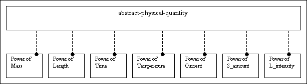
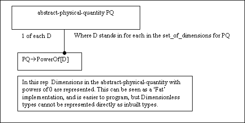
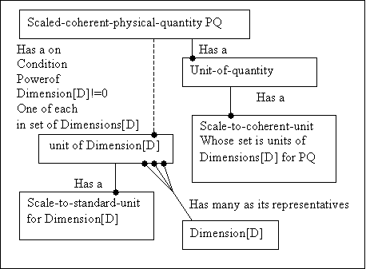

Concept of a physical Quantity .
- Index
-
- Types of physical-quantity.
-
- Abstract-physical-quantity.
-
- Representation of
abstract-physical-quantity
- Concrete-physical-quantity.
- Relations between units,physical-quantities and
dimensions.
-
- Coherent and incoherent concrete-physical-quantities
- Representation of
scaled-coherent-physical-quantity
Types of physical quantity
When discussing physical-quantities they divide into two major types,
abstract and concrete.
The documentation here is a more
informal way of expressing the rules that are expressed formally here.
Abstract physical quantity
An abstract-physical-quantity has no meaningful value.
However maths can be performed with abstract-physical-quantities.
An abstract-physical-quantity is represented in total by
the powers of its dimensions.
This field is called
dimensional analysis, and is used to check that the resulting abstract-physical-quantity resulting from a
calculation on abstract-physical-quantity operands is dimensionally correct.
|
Fig 1 |
| abstract pq |
Power of dimension |
|
Length |
Time |
Mass |
Temperature |
Current |
Substance |
Luminous |
| Length |
1 |
|
|
|
|
|
|
Velocity
=Length/Time |
1 |
-1 |
|
|
|
|
|
Acceleration
=Velocity/Time |
1 |
-2 |
|
|
|
|
|
Force
=Mass*
Acceleration |
1 |
-2 |
1 |
|
|
|
|
Maths works logarithmically.
Two abstract-physical-quantities
can only be added if they are dimensionally similar. The result is dimensionally-equivalent to the operands.
To multiply two abstract-physical-quantities, the powers of each of their
equivalent dimensions are added.
To divide one abstract-physical-quantity by another,the powers of each of the equivalent dimensions
of the divisor are subtracted from those of the dividend.
Representation of an abstract-physical-quantity
|
Fig 2a |
|  |
|
In the diagram the abstract-physical-quantity may be
represented
either as having 7 dimensions some of
which are 0,
or N dimensions, where 0<= N <
= 7.
Where all the powers are 0 the entity is
technically a scalar value.
An example of this is
the ratio between two lengths.
The entity can
either be said to have no dimensions,
or to have
N dimensions each of power 0.
|
|
Fig 2b |
|  |
|
Diagram 2b is a more concise representation, with
dimensionless physical-quantities represented.
|
|
Fig 2c |
 |
|
Diagram 2c is a more concise representation, with
dimensionless physical-quantities not represented.
|
Concrete-physical-quantity
A concrete-physical-quantity follows all the rules of an
abstract-physical-quantity but also has a numerical value. The value is only made meaningful by
the units in which the concrete-physical-quantity is expressed. To emphasise this;
When (say) I am travelling fast in a car, and I ask the
driver "how fast are we going?", if the driver replies "We are travelling at
10", I still have no idea how fast. However if the driver says "We are
travelling at 10 metres per second", then the value of the speed is given
meaning.
Therefore a concrete-physical-quantity must have units too. Ultimately
the units of all concrete-physical-quantities are derived from measurements of physical
phemomena. As an example the definition of one 'Second' of time1:
The
second is the duration of 9,192,631,770 periods of the radiation corresponding
to the transition between the two hyperfine levels of the ground state of
cesium-133 atom.
Because of the vagaries involved in measurement, there
may be quite a high level of uncertainty involved, however a concrete time can
be compared, or have other mathematical operations performed with another
concrete time, whatever the units if the units of time each express a
relationship to a common definition.
Relations between units,physical-quantities and
dimensions.
Because of the common definition, at the simplest level
two physical-quantity types of equivalent dimensions but different units can be
converted by scaling. Assume two units for the same physical-quantity unit1 and
unit2 having representing the same phenomenon.
Let Kpqd1 be scaling of unit1 to some common definition
C.
Let Kpqd2 be scaling of unit1 to the common
definition C.
Let [D...] represent the set of equivalent
dimensions comprising the abstract-physical-quantity layer
physical-quantity[D...].unit1.val
= Kpqd1 * C;
physical-quantity[D...].unit2.val
= Kpqd2 * C;
therefore:
physical-quantity[D...].unit1.val = Kpqd1/Kpqd2 *
physical-quantity[D...].unit2.val.
Coherent and incoherent concrete physical-quantities
The problem with this is that there is no way to perform
computations involving different physical quantity types, because there is
no relationship between their units. However because all physical quantities are
based on the same seven dimensions, by using the 7 one dimensional quantities as
base units and expressing physical-quantities of more than dimension in terms of
these base units the computations can be achieved. These types are known as
coherent physical-quantities2.
In a coherent-physiacl-quantity The above formula can now be applied at the level of the
base dimensions, by replacing the constant C with another arbitrary unit, which
is selected as the standard-unit for the dimension:
Let Kd1 be scaling of unit1 to some common definition
S.
Let Kd2 be scaling of unit1 to the common
definition S.
dimension-unit[D].unit1.val = Kd1 *
S;
dimension-unit[D].unit2.val
= Kd2 * S;
.
Not all units used in physical quantities are
directly expressible as coherent-physical-quantities.
For example:
The newton.
The newton is a
short hand for the units of the force which are kg.m.s-2. This is an
example of a physical quantity expressible directly in terms of the units
of its dimensions. This is a coherent-physical-quantity.
The kilogram-force.
1 kilogram
force represents a mass of 1 kg * the acceleration due to gravity (m.s-2). This is an
example of a physical quantity which is not expressible directly in terms
of the units of its dimensions. This I shall refer to as an
incoherent-physical-quantity.
A generic physical quantity needs the capability to
represent both types. By adding another
scaling at the physical-quantity layer which scales an
incoherent-physical-quantity to a coherent one, conformity can be achieved for
all unit systems. Therefore scalings can occur at two levels in
a concrete pq. Firstly at the level of the dimensions of which it is comprised,
and secondly at the level of the physical quantity itself.
I have called the unified type a
scaled-coherent-physical-quantity. The scaled-coherent-physical-quantity is used
as the basis of the C++ physical_quantity. By using the formulas for units of
dimension and units of quantity it is then possible to scale between most if not
all sets of units that will be encountered.
|
Diagram of a scaled-coherent-physical-quantity
with standard unit scaling. |
| 
|
Index
footnotes
1.
From the Guide for the Use of the International System of units (SI), Nist Special Publication 811, 1995 edition.
2.
The most obvious example being the S.I. units system.